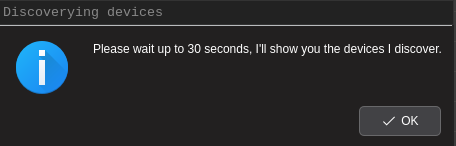
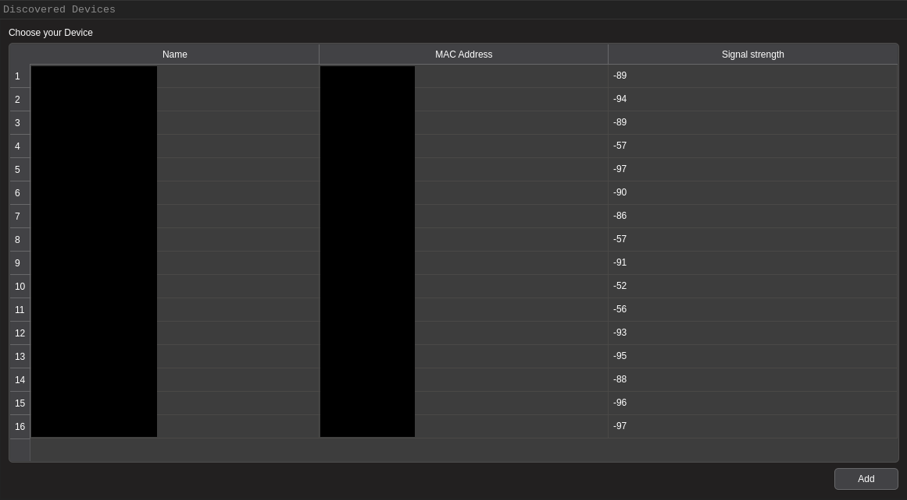
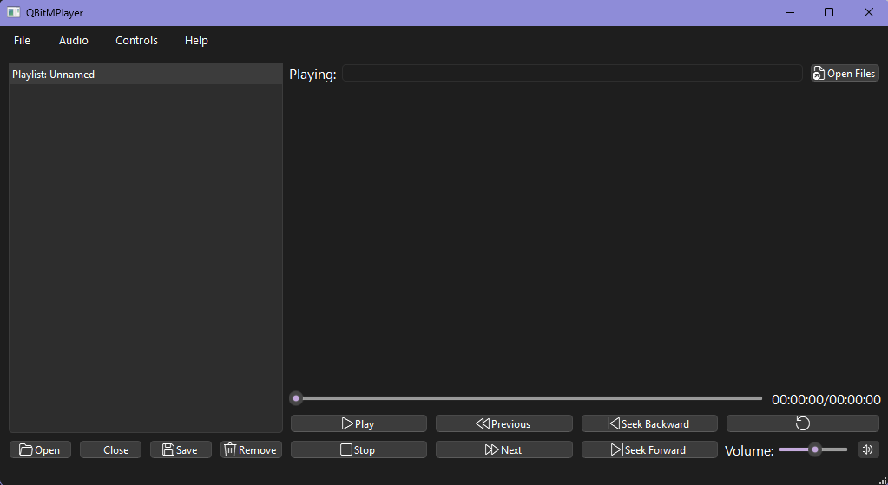
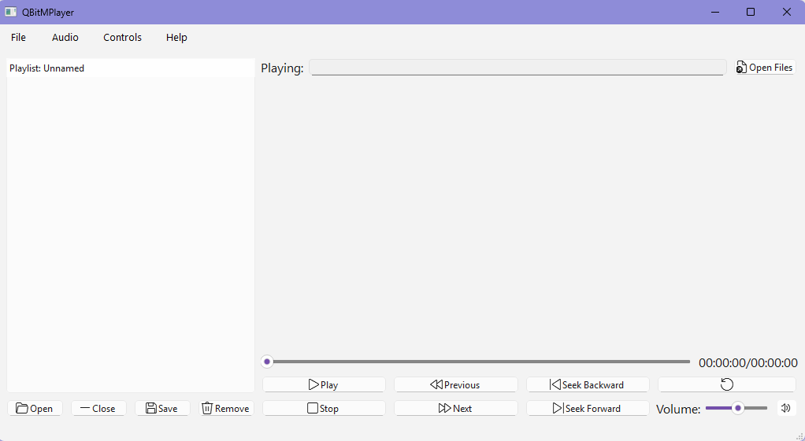
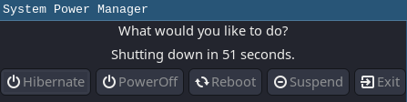
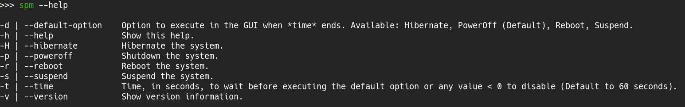
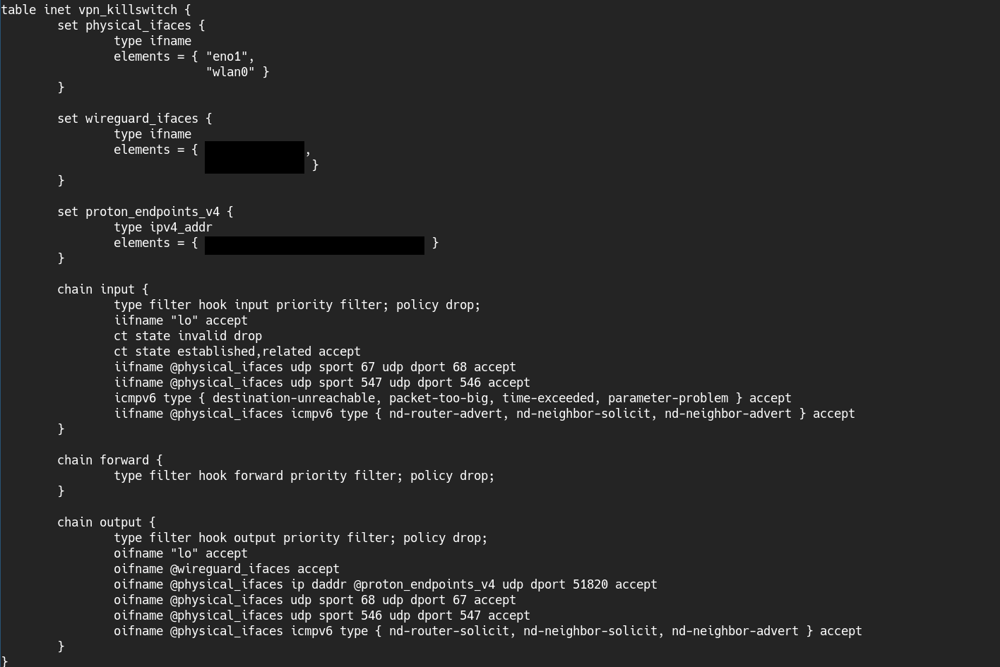
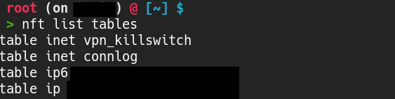
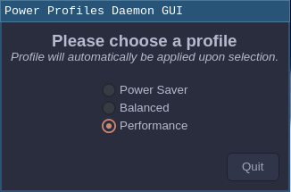
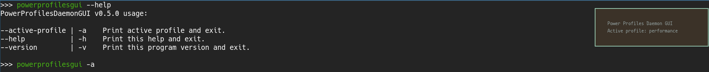

BtScreenLocker


A background service that locks your session when your phone’s Bluetooth moves out of range.
Brayan Mejía Salazar · Dominican Republic
Small, fast programs that do one job well: a screen locker that reacts to your phone, a power menu, a music player, a VPN kill switch. Open source, written with Qt, GTK and the shell.


A background service that locks your session when your phone’s Bluetooth moves out of range.


A lightweight music player with optional video playback. Available for Linux and Windows.


A power menu to hibernate, reboot, shut down or suspend, styled after the one in MATE.


A fail-closed firewall for ProtonVPN on Gentoo. If the WireGuard tunnel drops, all traffic stops instead of leaking.


A graphical interface for power-profiles-daemon that sets the active power profile through D-Bus calls.
I’m a Software Engineering student at UAPA and have worked at Telenord for five years, the last three as a quality auditor, where I learned to care about process and about finding the cause of a problem, not just its symptom.
I’ve used Linux daily for over nine years. I’m currently completing cybersecurity courses and I’m looking for developer roles, including remote ones.